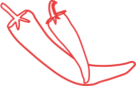

Bij Global Foodies komen alle mensen samen. Ongeacht je leeftijd, achtergrond of ervaring, iedereen is welkom! Bij Global Foodies wordt er niet alleen maar gekookt, maar connecteren alle leden met elkaar door elkaars gerechten uit verschillende culturen te proberen en elkaars verhalen te delen. Global foodies zet zich in om voedselverspilling te vermijden en een goede bijdrage aan onze aarde te leveren. Ook jij bent welkom, wordt lid bij Global Foodies om nieuwe gerechten te ontdekken!
Word lid! Verschillende producten zoals kookhoeden, kookschorts, snijplanken en nog meer!
Shop nu!